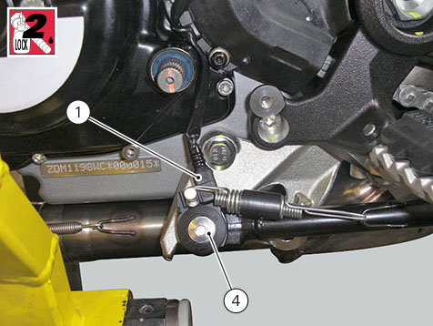
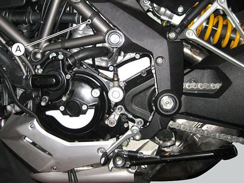

Refitting the side stand
Reassembling the side stand
Grease the side stand (8) and fit it to the plate (3). Secure it with pin (7) and nut (9).
Tighten nut (9) to a torque of 20 Nm ±10%.
Position the side stand return springs (5) and (6) and attach them to fasteners (B) and (C) on plate and stand.
Place the switch (1) on the bracket, resting against pin (7).
Fit the retaining screw (4) with specified threadlocker and tighten to a torque of 5 Nm ±10%.

Refitting the side stand
Position the side stand plate (3) to the frame and fit the two screws (2) applying recommended threadlocker.
Tighten the screws (2) to a torque of 43 Nm ±10%.
Connect the side stand switch connector (A) to the main wiring.
To position stand switch wiring, refer to table "
Routing of wiring on frame
" for the base version or to Section "
Routing of wiring on frame
" for the Pikes Peak, Granturismo or Touring versions.
